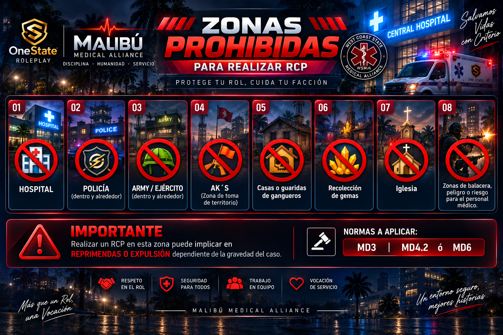
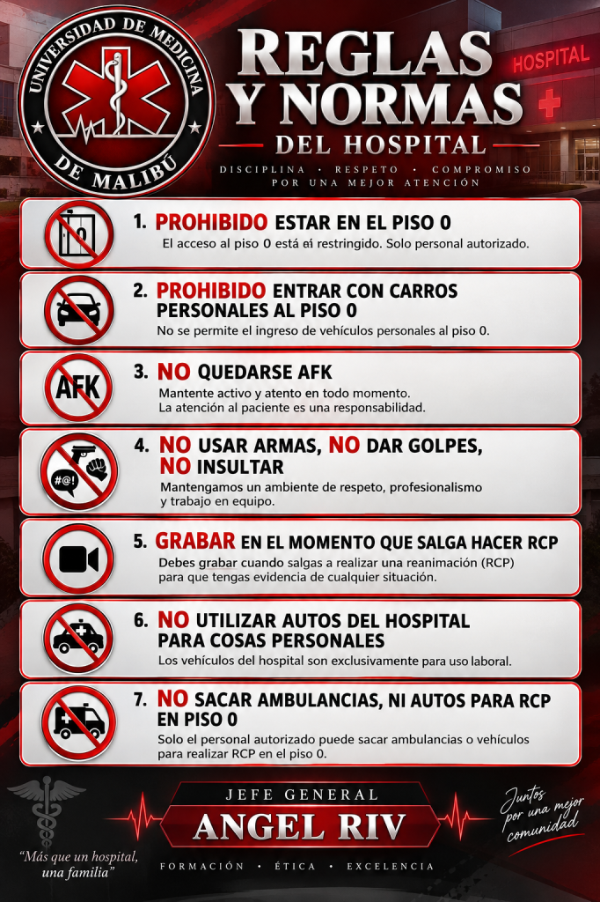
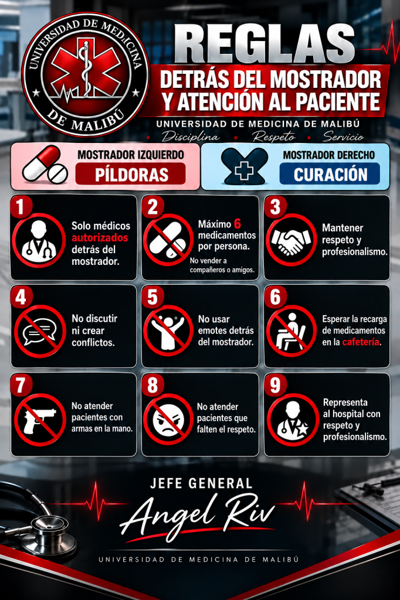
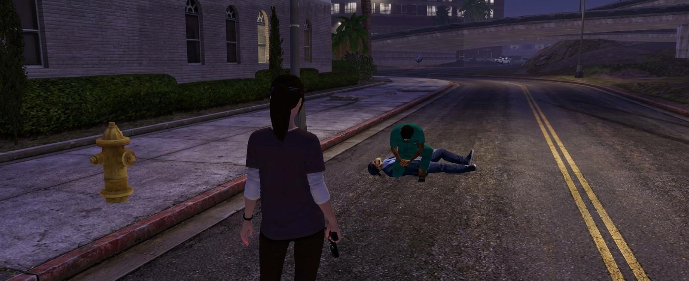
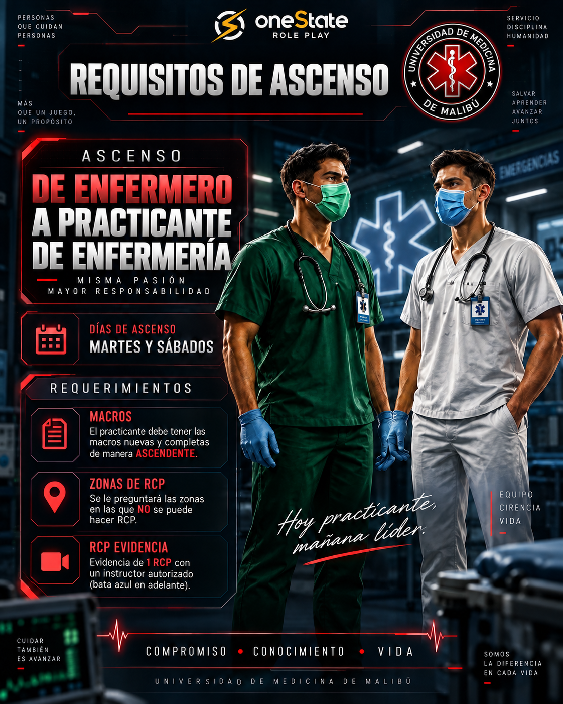

01
🚫 Zonas prohibidas
Consultá las zonas donde no debe realizarse RCP.
Macros, normas, ascensos y protocolos en un solo lugar
🔽 Seguí deslizando
Nos alegra tenerte en el equipo. Acá valoramos el respeto, el compañerismo, el aprendizaje y la vocación de servicio.
Que disfrutes esta nueva etapa y sigas creciendo con nosotros dentro del hospital.
Este portal reúne los procesos de la facción, pero no reemplaza al entrenador médico. ¿Todavía no tenés uno? Acercate a alguno o avisale a cualquier integrante.
Antes de cargarlas, borrá las macros que tengas.
Cuando termines, buscá a un entrenador.
Al pegar las dos últimas (19 y 20), reemplazá los datos entre paréntesis por tu nombre en el juego, tu rango médico (los bata verde son Enfermero) y tu usuario de Discord. ¿Dónde veo mi usuario? ¿No tenés Discord? Creá tu cuenta acá.
Ejemplo: bata verde llamado Pepito, con usuario de Discord usuario:
/me Hola mi nombre es Pepito, Enfermero de Servicios Médicos Malibu Latam. /n mi Discord: usuario
La macro de presentación (/me Hola mi nombre es…) sirve para saludar: cuando te cruces con alguien de otra facción, usala junto con el gesto de saludo militar.

Consultá las zonas donde no debe realizarse RCP.
Ingresá al mapa para descubrir si podés hacer RCP en cada punto de la ciudad.

Comportamiento y convivencia dentro del hospital.

Atención al paciente y conducta profesional.

Evidencia de un RCP: ponete en contacto con un entrenador y pedile que te saque una captura para tu ascenso. Deben verse los dos.

Ver los requisitos para avanzar a practicante de enfermería (bata blanca).
No olvides tu barra de experiencia
🏅 Todos los días hay eventos que suman medallas y capacitaciones que te ayudan a formarte mejor. ¡Sumate!
🚑 Nunca salgas a hacer RCP solo: siempre tiene que acompañarte un entrenador, el que esté disponible.
Y nunca en auto particular: siempre en un vehículo de la facción.